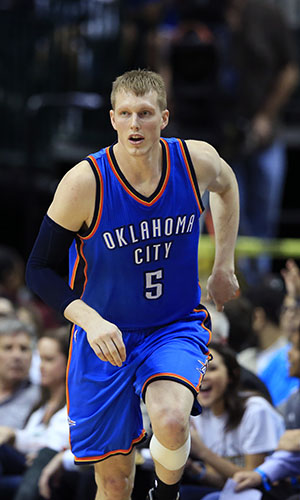

|  |
Матчи |
78 |
|
Передачи (всего/среднее) |
84 |
1.1 |
| В основе |
56 |
|
Подборы в защите (всего/среднее) |
158 |
2 |
| Время (всего/среднее) |
1710:43 |
21:56 |
Подборы в атаке (всего/среднее) |
32 |
0.4 |
| Очки (всего/среднее) |
467 |
6 |
Подборы (всего/среднее) |
190 |
2.4 |
| 2-очковые броски (всего/среднее) |
74/201 |
0.9/2.6 |
Перехваты (всего/среднее) |
46 |
0.6 |
| 2-очковые броски (% реализации) |
36.8% |
|
Потери (всего/среднее) |
54 |
0.7 |
| 3-очковые броски (всего/среднее) |
93/236 |
1.2/3 |
Блокшоты (всего/среднее) |
20 |
0.3 |
| 3-очковые броски (% реализации) |
39.4% |
|
Блокшоты соперника (всего/среднее) |
27 |
0.3 |
| Штрафные броски (всего/среднее) |
40/52 |
0.5/0.7 |
Фолы (всего/среднее) |
148 |
1.9 |
| Кайл Синглер |
Штрафные броски (% реализации) |
76.9% |
|
Коэффициент полезности (всего/среднее) |
296 |
3.8 |